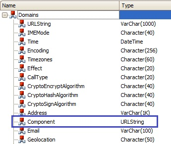

This domain is used to display the content of a web page within the application (also known as a 'WebView') instead of in the device browser. In Edit mode, a URL can be entered as text using the platform’s input method. Folder View... Domains 
The Component domain type is VarChar(1000). Note: Using this control in a grid may cause performance issues in some devices since the native controls behind are not designed to be used in grids. Tip: use "Label Position" property in "NONE" to avoid UX effects like control redrawing.
|
| Backlinks | ||
| Client-side Events in Smart Devices | Category:Domains with Special Semantics | |
| Server.Socket external object | Smart Devices Semantic Domains | WebBrowser external object |